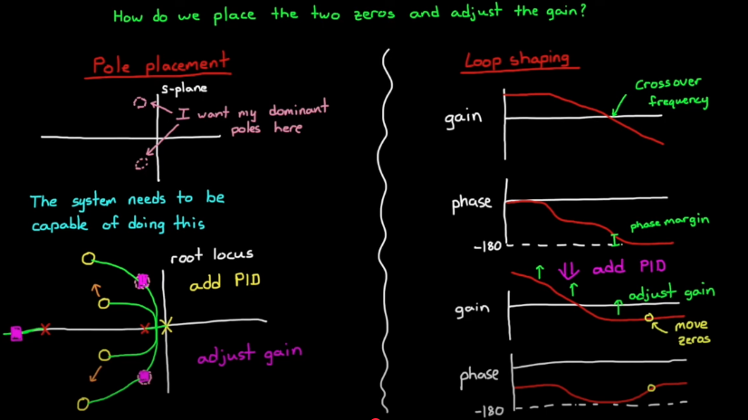

PID Control
This page only covers continuous-time PID control. For more advanced topics on discrete PID, visit Discrete Time Control page for more details.
PID by itself is a linear controller. Gain Scheduling, Anti-windup schemes, derivative filtering, gain scheduling can make it non-linear
Which controller to use?
\(\begin{array}{c|c|c|c}
Example & System Order & Controller & Reasoning\\
\hline
\text{Controlling mass position using force} & 2 & \text{PD or PID} & \text{Typically needs damping like mass-spring damper, otherwise will oscillate} \\
\text{Controlling V across C using current} & 1 & \text{P or PI} & \text{not much danger of over-shoot or oscillation} \\
\text{Controlling I across R using voltage} & 0 & \text{P or PI} & \text{not much danger, direct mapping}
\end{array}\)
Note System order denotes how many ‘integration’ away is your control input from output. For instance controlling position with force would be a second order system.
PI vs PD vs PID
The derivative controller is highly sensitive to noise and may throw system into instability.
PI controller
PI controller reduces both rise time and the steady state errors of the system. Integral term introduces phase lag, which may slow down response time.
PD controller
A PD controller reduces transients like rise time, overshoot, and oscillations in the output. D controller cannot exist on its own since itself doesn’t stabilize the system, but amplifies noise.
Strategies for Tuning a PID Controller
Diagram Walkthrough
- Model representation

- run input sequence
- observe step response for Cohen-Coon
- Heuristic Methods:
System model not required, only need to measure certain traits such as process gain, time constant. and dead time.
- Cohen-Coon
- Zeguler-Nichols (needs to be careful on hardware, due to oscillatory behavior)
- System Identification.
- Measure step-response of system.
- Tweak your model coefficients so step responses match.
- Model needs to be defined beforehand.
- Tuning method with Model
- manual tuning
- pole placement
- Loop Shaping
- Heuristic Methods. (make model oscilatory NOT hardware)
- auto tuning
Manual PID Tuning Strategy
- Start with:
\[K_P > 0, \quad K_I = 0, \quad K_D = 0\]
- Increase \(K_P\) until:
- The system starts responding to setpoint changes.
- It begins to oscillate consistently without settling.
This means it’s reached the edge of stability.
-
Back off \(K_P\) by ~10–20% to get a stable (but responsive) system.
- Increase \(K_D\) to:
- Dampen the oscillations.
- Improve settling time and reduce overshoot.
- Increase \(K_I\) slowly to:
- Eliminate steady-state error (e.g. small drift from setpoint).
- Watch for overshoot or oscillation due to integral windup.
üß™ Ziegler‚ÄìNichols Method (Ultimate Gain Method)
This is a classical tuning rule. It gives you a starting point for
\(K_P,\ K_I,\ \text{and}\ K_D\)
based on when the system first starts oscillating.
üîß Steps:
-
Set:
\(K_I = 0,\quad K_D = 0\)
-
Increase \(K_P\) until the system output shows sustained oscillations (constant amplitude).
- That value of \(K_P\) is called the ultimate gain, denoted:
\(K_u\)
-
Measure the oscillation period — the time between peaks — and call it:
\(T_u\)
üìê Use these tables to compute gains:
| Controller |
\(K_P\) |
\(K_I\) |
\(K_D\) |
| P |
\(0.5K_u\) |
– |
– |
| PI |
\(0.45K_u\) |
\(1.2K_u / T_u\) |
– |
| PID |
\(0.6K_u\) |
\(2K_u / T_u\) |
\(K_u T_u / 8\) |
| Control Type |
\(K_p\) |
\(T_i\) |
\(T_d\) |
\(K_i\) |
\(K_d\) |
| P |
\(0.5K_u\) |
– |
– |
– |
– |
| PI |
\(0.45K_u\) |
\(0.8\overline{3}T_u\) |
– |
\(0.54K_u / T_u\) |
– |
| PD |
\(0.8K_u\) |
– |
\(0.125T_u\) |
– |
\(0.10K_u T_u\) |
| Classic PID |
\(0.6K_u\) |
\(0.5T_u\) |
\(0.125T_u\) |
\(1.2K_u / T_u\) |
\(0.075K_u T_u\) |
| Pessen Integral Rule |
\(0.7K_u\) |
\(0.4T_u\) |
\(0.15T_u\) |
\(1.75K_u / T_u\) |
\(0.105K_u T_u\) |
| Some Overshoot |
\(0.3\overline{3}K_u\) |
\(0.50T_u\) |
\(0.3\overline{3}T_u\) |
\(0.6\overline{6}K_u / T_u\) |
\(0.1\overline{1}K_u T_u\) |
| No Overshoot |
\(0.20K_u\) |
\(0.50T_u\) |
\(0.3\overline{3}T_u\) |
\(0.40K_u / T_u\) |
\(0.06\overline{6}K_u T_u\) |
⚠️ Notes for Drone Applications
- Ziegler–Nichols gives aggressive tuning, often with overshoot.
- For drones, it’s safer to:
- Start with rate control loops (angular velocity).
- Then move to attitude control (roll, pitch, yaw).
Integral Windup
Error builds up even though actuator saturates. takes take for negative error to be reflected in the controller

Anti-Windup
Most anti-windup schemes prevents integral from accumulating error past a threshold
- clamping: two checks (if both true, shut off integration)
- Output is saturating (clamp the output of the PID (this needs to be conservative), if the output before and after the clamp are the same, then actuator is beginning to get saturated.)
- Input and output have same sign
- block calculation
- observer approach
Derivative Control
Derivative control “predicts the future” in constrast to integral control - a decrease in error gives a decrease in control input. Noise amplifies Derivative control output.
Derivative Control Example
Altitude Control for Quadcopter:
Desired altitude 50m, as drone shoots up, error term decreases (negative derivative) -> negative value from derivative term, slows motors down, reduce over shoot
How to derive a model
First principles
This methods also works if one knows the individual components of the system.
- Newtonian Mechanics
- Lagrangian Mechanics
System ID
If the model is too complicated, system ID can work (black box method). No need to know the details of the system.
PID Pole Placement (LQG) and Loop Shaping (Robust Control)
PID Transfer Function
\(C(s) = K_p + \frac{K_i}{s} + K_d s\)

How does PID affect Loop Shaping (Bode Plot):
1. Proportional term (\(K_p\))
- Simply scales the magnitude of the open-loop transfer function across all frequencies by \(K_p\) (shifts the Bode magnitude plot up or down).
- No slope change, no phase lead/lag (phase stays the same as the plant’s at each frequency).
2. Integral term (\(\frac{K_i}{s}\))
- Adds a pole at \(s=0\) and a zero at \(s=-K_i/K_p\) (if expressed in standard form for PI control).
- In the Bode plot: increases low-frequency gain slope by +20 dB/dec below the zero, giving better low-frequency tracking and disturbance rejection.
- Phase: introduces –90° lag below the zero frequency (eventually reduced to 0° after the zero).
3. Derivative term (\(K_d s\))
- Adds a zero at the origin and a pole at infinity (in practice, implemented with a high-frequency roll-off to avoid noise).
- In the Bode plot: increases high-frequency gain slope by +20 dB/dec above the zero’s frequency, giving phase lead and faster response.
- Phase: can give up to +90° lead around its zero.
Putting them together in loop shaping:
- Integral boosts the low-frequency magnitude to push the gain crossover lower and improve steady-state accuracy.
- Derivative boosts magnitude at mid-frequencies to increase phase margin, which can stabilize a plant with low natural phase margin.
- Proportional shifts the entire magnitude plot up or down to meet your crossover frequency and gain margin targets.
PID Effect on Pole Placement
1️⃣ Starting point — closed-loop poles come from \(1 + L(s) = 0\)
For unity feedback:
\[T(s) = \frac{C(s) G(s)}{1 + C(s) G(s)}\]
The closed-loop poles are the roots of:
\[1 + C(s) G(s) = 0\]
Adding a PID means replacing \(C(s)\) with:
\[C(s) = K_p + \frac{K_i}{s} + K_d s\]
That changes the polynomial \(1 + C(s) G(s) = 0\), which changes the pole locations.
2️⃣ How each term influences pole placement
(a) Proportional \(K_p\)
- Multiplies the plant’s transfer function by a constant.
- Effect: Moves the closed-loop poles along the root locus without changing its shape.
- Higher \(K_p\) → poles move toward/into the left-half plane faster (increasing speed) but can reduce stability margin.
(b) Integral \(\frac{K_i}{s}\)
- Adds a pole at the origin to the open-loop transfer function.
- This changes the root locus shape, not just shifts along it.
- Forces the steady-state error for step inputs to zero by making the closed-loop a Type 1 system (or higher).
- Because it adds a pole, it can also slow down the system and reduce damping unless compensated.
(c) Derivative \(K_d s\)
- Adds a zero to the open-loop transfer function.
- Zeros bend the root locus toward themselves, which can move dominant poles to locations with higher damping ratio.
- Used to improve transient response (overshoot, settling time) by pulling poles into a “nicer” part of the complex plane.
3️⃣ Big picture: PID in pole placement terms
- P: Changes gain → moves poles along an existing root-locus path.
- I: Adds a pole at origin → changes the shape of the root locus, introduces the integrator effect.
- D: Adds a zero → bends the root locus toward more desirable damping.
The net effect is that PID changes both:
- The geometry of the root locus (via added poles/zeros)
- The position along that locus (via gain tuning)
Gain Scheduling - Control Systtems in Practice
Movivation
Linear controllers may only work well under certain operating conditions but not all.
Linear Parameter Varying systems:
A fixed lienar transfer function but different parameters under different operating conditions.
How to deal with LPV systems?
- Build nonlinear controler.
- Build linear robust controller. Drop in performance and may not even be possible.
- Limit operations.
- Gain scheduling.
Visualization
Implementation
Steps
- Linearize plant at each design operating condition. (linear controller for linear plant)
- find a critical point in each of the regions that represents the whole area well
- Linearize plant at the point
- Tune gains at each design point
- Performance (or even stability in some cases) is only guaranteed at the design points
- Either use a single gain for the entire area or Interpolate gains between two points
- Make controller more robust or add more design points
- Choose the gain scheduling architecture
- A switch system. However, it may produce some unintended transients at the switch condition
- See next section for more details
- Assess the control performance
- Often simulated
- All critical transitions and corner cases should be covered
Preventing drastic changes
Scenario At the boundary points of the gain areas, errors don’t change much, but a discrete switch causes controller gain to change -> causing erratic behavior.
Methods
-
Transient-free Switch

-
Gain curve (2D) and Gain Surface (3D)

Important Advanced PID concepts for Further Study
Cascade Loops
Why multiple loops?
- Inner loops can be tuned to respond quickly to local disturbances, the outer loop can be tuned more conservatively to reject sensor noise and increase stability
- Cascade approach makes it easier to isolate the problem
- Multiple groups can work separate parts.
- The motor you buy has a built-in controller
How to Tune Cascade loops
- Case 1: Inner loop speed » outer loop speed
- can be tuned separately. Assume the other loops not present and tune like normal
- Case 2: Inner loop speed \(\approx\) Outerloop speed
- Tune inner loop with a guess
- Tune outer loop
- Iterate
Discrete PID
There are three major characteristics of a digital system: 1. Sample Time 2. Quatization 3. Transport Delay
Please check out discrete time control page for more details on discrete PID controller